To know about the formation of the universe
To differentiate between the members of the Solar System
To understand the motions of the Earth and its effects
To learn about the different spheres of the Earth and their interaction with each other
Pathway:
This lesson focuses on the universe and the members of the solar system. It also deals with the motions of the Earth and their resultant effects. It also talks about the four spheres of the Earth.
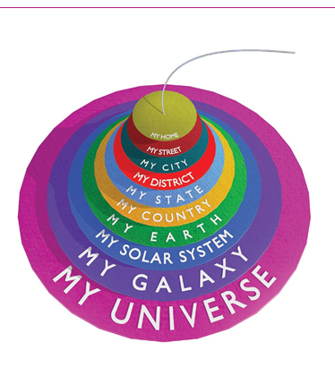
Teacher: Students, do you all know where you reside?
Students: Yes, teacher.
Teacher: (Points out a student) Iniya, do you know your address? Can you tell me your full address?
Iniya: Yes teacher. My address is Iniya, 24, Bharathiar street Thirunagar, Madurai – 6 2 5 0 0 6.
Teacher: Good. Iniya, where is Thirunagar?
Iniya: Thirunagar is in Madurai.
Teacher : Children, tell me where Madurai is?
Students: It is in Tamil Nadu.
Teacher : Good. Where is Tamil Nadu?
Students: In India ...teacher.
Teacher : Now tell me where India is?
Students: India is in the continent of Asia, teacher.
Teacher : Excellent! Can anyone tell me where is the continent of Asia?
Students: Yes teacher. It is on the Earth.
Teacher : Ok children, tell me where the Earth is located?
Students: (Remain silent and after sometime they reply in chorus) No. We don't know.
Teacher: Now, let me explain. The Earth is the third planet in the Solar System. The solar system is in the galaxy. It is named as the Milky way Galaxy. There are millions of such galaxies in the Universe.
Iniya: Teacher, shall I say the address of our Earth?
Teacher : Address of our Earth? It's interesting Iniya. Tell us the address.
Iniya: Miss. Earth, No.3. Solar System, Milky way Galaxy, Universe.
(Everyone clapped and the teacher appreciates Iniya.)
Teacher : That was very good Iniya. Now let us know about the solar system, galaxy, the Universe and all other bodies in detail in this lesson.
Numerous stars and celestial bodies came into existence by a massive explosion called the Big Bang. These celestial bodies together are called the Universe. It is also referred to as the Cosmos. The stars that you see are so far away that they appear to be small, but they are really huge in size.
Do you know
The study of universe is called cosmology. The term cosmos is derived from Greek word Kosmos.
1. Universe
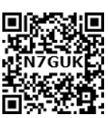
The Universe is a vast expanse of space. Most astronomers believe that the Universe came into existence after the Big Bang explosion that took place about 15 billion years ago. The universe consists of billions of galaxies, stars, planets, comets, asteroids, meteoroids and natural satellites. These are collectively called as celestial bodies, which are located far away from each other. A Light year is the unit used to measure the distance between the celestial bodies.
Galaxy
A galaxy is a huge cluster of stars which are held together by gravitational force. Most of the galaxies are scattered in space, but some remain in groups. The Milky Way Galaxy was formed about 5 billion years after the Big Bang explosion. Our solar system is a part of the Milky Way galaxy. Andromeda galaxy is the nearest to the Earth apart from the ‘Magellanic Clouds’ galaxy.
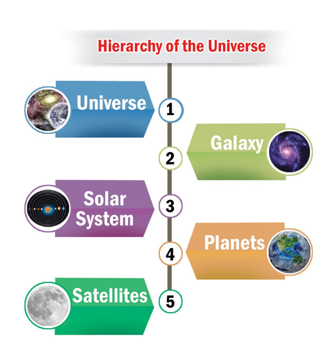
Do you know
A light-year is the distance travelled by light in a year. Light travels at a velocity of 300,000 km per second. Sound travels at a speed of 330 metre per second.
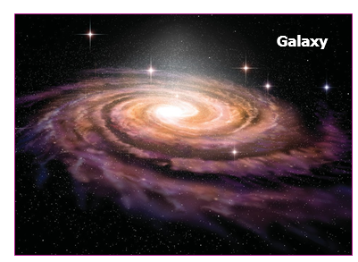
2. The Solar System
The word ‘solar’ is derived from the Roman word ‘sol’, which means ‘Sun God’. The solar system is believed to have formed about 4.5 billion years ago. The solar system is a gravitationally bound system which comprises of the Sun, the eight planets, dwarf planets, satellites, comets, asteroids and meteoroids.
Activity:
Watch a show in the nearest planetarium. a) Share your experience in the class room. b) Make an album of interesting facts about the solar system.
The Sun
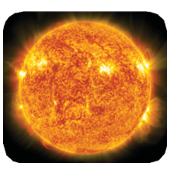
The Sun is at the centre of the solar system. Each member of the solar system revolves around the Sun. The Sun is so huge, that it accounts for 99.8 percent of the entire mass of the solar system. The Sun is made up of extremely hot gases like Hydrogen and Helium.
The Sun is a star. It is self-luminous; it gives light on its own. The surface temperature of the Sun is about 6,000° C. It is the source of light and heat energy to the entire solar system. Sunlight takes about 8.3 minutes to reach the Earth.
Do you know
1.3 million Earths can fit inside the Sun. Imagine how big the Sun is.
Planets
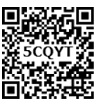
The word 'planet' means wanderer. There are eight planets in the solar system. They are Mercury, Venus, Earth, Mars, Jupiter, Saturn, Uranus and Neptune. All the planets rotate anti-clockwise (from west to east) on their own axes except Venus and Uranus. The elliptical path in which the planets move around the Sun is known as orbit. The eight planets revolve in their respective orbits because of the gravitational pull of the Sun. They do not move out of their paths or away from the solar system.
The four planets nearer to the Sun are called Inner or Terrestrial Planets (Mercury, Venus, Earth and Mars). The inner planets are comparatively smaller in size and are composed of rocks. The surface of inner planets has mountains, volcanoes and craters. The last four planets are called as Outer Planets or Jovian Planets (Jupiter, Saturn, Uranus, and Neptune). They are also called Gaseous Giants. An asteroid belt is found between Mars and Jupiter.
GEO CONNECT: The ancient Tamils knew that the planets revolved around the Sun. For example, in Tamil literature Sirupanatruppadai, the line ’வாள் நிற விசும்பின் கோள் மீன் சூழ்ந்த இளங்கதிர் ஞாயிறு’ mentions that the Sun is surrounded by planets.
Mnemonic to remember the order of planets: My Very Educated Mother Just Showed Us Neptune.
Mercury (The Nearest Planet)
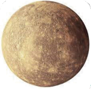
Mercury is the smallest and closest planet to the Sun. It is named after the Roman deity ‘Mercury’, the messenger to the Gods. It is an airless and waterless planet. It does not have an atmosphere and so experiences extremes of temperature. It has no natural satellites. Mercury can be viewed in the morning and evening with the naked eye.
Venus (The Hottest Planet)
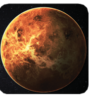
Venus is the second planet from the Sun. It is called the Earth’s twin, as it is almost the same size as the Earth. It has the longest rotation period, (243 days) among the planets in the Solar system. It rotates in the opposite direction to all other planets, except Uranus. It has no natural satellites, like Mercury. It is named after the Roman goddess of love and beauty. It is often visible in the mornings and the evenings and so it is frequently called as the Morning Star and the Evening Star. After the Moon, it is the brightest natural object in the night sky.
HOTS: Even though Mercury is the nearest planet to the Sun, Venus is the hottest one. Guess why?
Earth (The Living Planet)
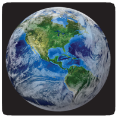
The Earth is the third planet from the Sun and the fifth largest planet in the solar system. It is called the ‘blue planet’ or ‘watery planet’ because three-fourth of the Earth is covered by water. The Earth is the only planet in the solar system which is not named after any Greek or Roman deity. It is the only planet known to support life. Life is possible on Earth because of the presence of land, air and water. The polar diameter of the Earth is 12,714 km and the equatorial diameter is 12,756 km. The Earth revolves around the Sun at a speed of about 30 km per second. The only natural satellite of the Earth is the Moon.
Do you know
The distance between the Sun and the Earth is about 150 million kilometer. A flight flying at a speed of 800 km per hour from the Earth would take 21 years to reach the Sun.
Mars (The Red Planet)
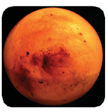
Mars is the fourth planet from the Sun and the second smallest planet in the solar system, after Mercury. It is named after the Roman God of war. It appears red in colour due to the presence of iron oxide on its surface. So, it is often described as the Red Planet. It has a thin atmosphere. It also has polar ice caps like the Earth.
On 24th September, 2014 Mangalyaan (Mars Orbiter Mission M O M), launched by Indian space research organization ISRO reached the orbit of Mars to analyze its atmosphere and topography. ISRO has now become the fourth space agency to reach Mars after the Soviet Space programme, NASA and the European Space Agency.
Mars has two natural satellites namely Phobos and Deimos. Many orbiters and rovers have been launched to explore this planet.
Jupiter (the Largest Planet)
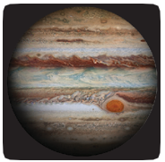
Jupiter is the fifth planet from the Sun and the largest planet in the solar system. It is named after the king of the Roman gods. It is the third brightest object. in the night sky, after moon and Venus. It is the fastest spinning planet in the solar system. It is called a gas giant planet. Its atmosphere is mostly made up of Hydrogen and Helium like the Sun. It has the largest number of natural satellites. Io, Europa, Ganymede and Callisto are a few large satellites of Jupiter.
Saturn (The Ringed Planet)
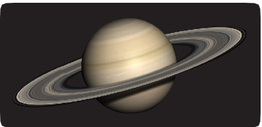
Saturn is the sixth planet from the Sun and the second largest planet in the solar system, after Jupiter. It is named after the Roman god of agriculture. Saturn has many rings around it. These rings are huge and are mostly made up of ice, rocks and dust particles. Saturn has 62 natural satellites around it. Titan, Saturn’s largest moon, is the only satellite in the solar system that has clouds and a dense atmosphere composed of nitrogen and methane. The specific gravity of Saturn is less than that of water.
HOTS: If you could put Saturn in a large enough ocean it would float. Guess why?
Uranus (The Somersaulting Planet)
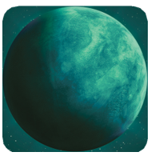
Uranus is the seventh planet from the Sun. It was the first to be discovered with a telescope by the astronomer William Herschel in 1781. It appears green due to the presence of methane gas. It is named after the Greek god of the sky. It rotates on its axis from east to west like Venus. Its axis is tilted so much that, it appears to orbit the Sun on its sides like a rolling ball. Uranus has 27 natural satellites, of which Titania is the largest.
Neptune (The Coldest Planet)
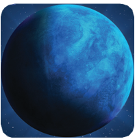
Neptune is the eighth and the farthest planet from the Sun. There are strong winds in this planet. It is named after the Roman god of sea. Neptune has 14 natural satellites, the largest being Triton. Because of its distance from the Sun, Neptune is one of the coldest planets in the solar system The striking blue and white features of Neptune help to distinguish it from Uranus.
HOTS: Imagine you were on a space craft travelling at the speed of light from Earth, how long would it take to reach the Sun?
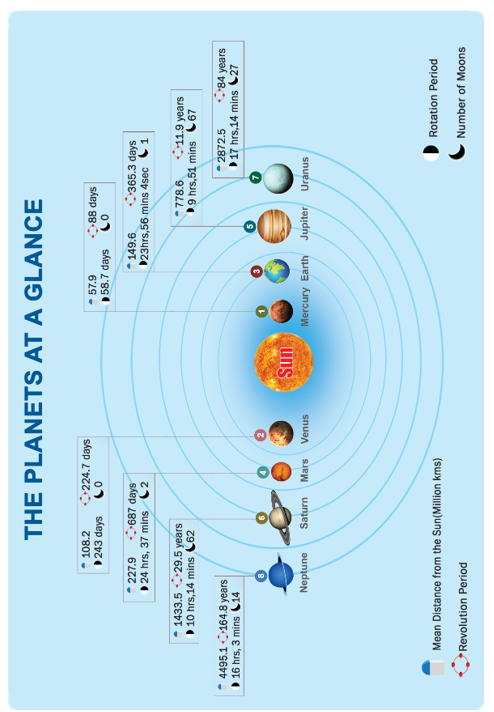
The Dwarf Planets
Dwarf planets are small celestial bodies found beyond the planet Neptune. They are extremely cold and dark. They are almost spherical in shape, but unlike planets they can share their orbit with other dwarf planets. The five dwarf planets of the solar system are Pluto, Ceres, Eris, Makemake and Haumea.
The Moon - Earth’s Satellite
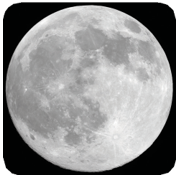
Satellites are celestial objects, which revolve around the planets. The moon is the Earth’s only satellite. It revolves around the Earth once in every 27 days and 8 hours. It takes about the same time for it to complete one rotation around its axis. It has no atmosphere. The surface of the moon is characterized by craters created by the impact of meteors. The distance between the moon and the Earth is about 3lakh 84 thousand 400 km. The size of the moon is one-quarter of the Earth. The Moon is the only celestial body where humans have landed.
HOTS: We see only one side of the Moon always. Why?
Asteroids
Asteroids are small solid objects that move around the Sun. They are found as a belt between Mars and Jupiter. They are too small to be called as planets. They are also known as Planetoids or Minor Planets.
Fact:
ISRO launched India’s first ever Moon mission, Chandrayaan 1 in 2008.
Comets
A comet is a celestial object made up of a head and a tail. The head of a comet consists of solid particles held together by ice and the tail is made up of gases. Halley’s Comet is the most famous comet which comes close to the Earth every 76 years. It appeared in 1986 and will appear in 2061.
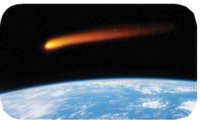
Meteors and Meteorites
A meteor is a stone like or metallic body. When entering into the Earth’s atmosphere, most of them burn. As they often appear as streaks of light in the sky, they are also known as Shooting Stars. Meteors which strike the Earth’s surface are called meteorites.
3. Motions of the Earth
Have you noticed the Sun in the morning, afternoon or evening? Is it in the same place throughout the day? No. It is seen in the east in the morning, overhead in the afternoon and in the west in the evening. Have you ever thought of the reason behind it? This is because of the constant moving of the Earth around the Sun. It seems that the Sun is moving, but it is not so. This is similar to what you experience when you are travelling in a bus or train. When you look out of the window, the trees, lamp posts and other objects seem to be moving, but actually it is you who are moving. To understand the motions of the Earth better, you need to be familiar with the shape and inclination of the Earth.
Shape and Inclination of the Earth
The Earth is spherical in shape. It rotates on its axis, which is an imaginary line that runs from the North Pole to the South Pole passing through the centre of the Earth. The Earth’s axis is always tilted or inclined from the vertical by an angle of 23½°. It makes an angle of 66½° with the plane of the Earth’s orbit.
Fact:
The velocity of the Earth’s rotation varies from 1,670 km per hour at the equator to 845 km per hour at 60° N and South latitudes and zero at the poles.
Rotation
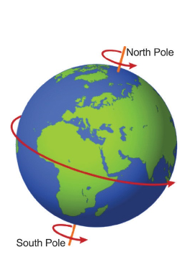
It is the spinning movement of the Earth on its axis. The Earth rotates from west to east (anti-clockwise) and takes 23 hours56 minutes and 4.09 seconds to complete one rotation. The time taken by the Earth to complete one rotation is called a day. The rotation of the Earth causes day and night. As the Earth is spherical in shape, only one half of it is illuminated by the Sun at a time. The other half remains dark. The illuminated portion of the Earth experiences day, whereas the darkened part of the Earth experiences night. The line which divides the surface of the Earth into a lighted half and a dark half is called the Terminator Line.
Fact:
The Midnight Sun is a natural phenomenon that occurs in the summer months in places north of the Arctic Circle or south of the Antarctic Circle, when the Sun remains overhead 24 hours a day.
Revolution
It is the movement of the Earth around the Sun on its elliptical path. The Earth takes 365 ¼ days to complete one revolution. It revolves around the Sun at a speed of 30 km per second. For the sake of convenience, we take it as 365 days and call it a year. The remaining quarter day is added once in every four years in the month of February. That is why February has 29 days once in four years. It is called a Leap Year. The inclination of the Earth on its axis and its revolution around the Sun cause different seasons.
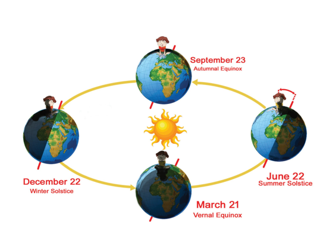
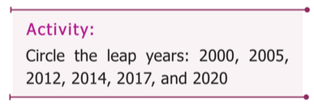
The Northern Hemisphere is inclined towards the Sun for six months from 21st March to 23rd September while the Southern Hemisphere is tilted away from the Sun.
HOTS: Priya is 12 years old. How many times she would have revolved around the Sun?
From Sep 23rd to March 21st the southern hemisphere is inclined towards the Sun and the northern hemisphere faces away from the Sun. The changing position of the Earth in its orbit during revolution gives the impression that the Sun is continuously moving north and south of the equator. The equator faces the Sun directly on 21 March and 23 September. These two days are called Equinoxes, during which the day and night are equal throughout the Earth.
Do you know
Perihelion is the Earth’s closest position to the Sun. Aphelion is the farthest position of the Earth from the Sun.
On 21st June, the Tropic of Cancer faces the Sun. This is known as Summer Solstice. It is the longest day in the Northern Hemisphere and longest night (shortest day) in the Southern Hemisphere. On 22nd December, the Tropic of Capricorn faces the Sun. It is called as Winter Solstice. It is the longest day in the Southern Hemisphere and longest night (shortest day) in the Northern Hemisphere.
HOTS: If the Earth is not inclined at 23 and half degree angle, what would happen to the Earth?
4. Spheres of the Earth
The Earth is the most suitable planet to support life. It has three major components that we call as the realms of the Earth- lithosphere, hydrosphere and atmosphere. The three components along with suitable climate make life possible on Earth. All living things exist in a narrow zone called the biosphere. Now let us have a close look at each of the spheres.
Lithosphere
The word lithosphere is derived from the Greek word Lithos, which means rocky. The Lithosphere is the land on which we live. It is the solid outer layer of the Earth consisting of rocks and soil.
Hydrosphere
The word Hydro means water in Greek. The hydrosphere consists of water bodies such as oceans, seas, rivers, lakes, ice caps on mountains and water vapour in the atmosphere.
Atmosphere
The word Atmo means air in Greek. Atmosphere is the envelope of air that surrounds the Earth. Different types of gases make up the atmosphere. The major gases are Nitrogen (78%) and Oxygen (21%). The other gases like Carbon dioxide, Hydrogen, Helium, Argon and Ozone are present in meager amounts.
Biosphere
The narrow belt of interaction among the lithosphere, the hydrosphere and the atmosphere, where life exists is known as Biosphere. Bio means life in Greek. It consists of distinct zones. Each zone has its own climate, plant and animal life. These zones are known as ecosystems.
Do you know
The Gulf of Mannar Biosphere Reserve in the Indian Ocean covers an area of 10,500 square kilo metre in the ocean.
The Universe was formed 15 billion years after the Big Bang explosion.
Many galaxies are found in the Universe.
Our solar system is a part of the Milky Way Galaxy.
The Sun is so huge that it accounts for 99.8 percent of the entire mass of the solar system.
All planets rotate anti-clockwise on their own axes except Venus and Uranus.
Asteroids are found as a belt between Mars and Jupiter.
The rotation of the Earth causes day and night.
The revolution of the Earth causes seasons.
Summer solstice is the longest day in the Northern Hemisphere.
The presence of land, water and air along with suitable climate makes life possible on Earth.
1 |
Galaxy |
- |
The cluster of stars |
2 |
Asteroids |
- |
Irregular shaped rocks between Mars and Jupiter |
3 |
Meteors |
- |
Space particles left behind by comets or asteroids |
4 |
Comets |
- |
Frozen lumps of rocks, dust and gas. |
5 |
Satellites |
- |
Celestial bodies that move around the planets. |
6 |
Orbit |
- |
The path in which the planets move around the Sun. |
7 |
Earth's axis |
- |
An imaginary line passing through the centre of the Earth from the North Pole to the South Pole. |
8 |
Rotation |
- |
Spinning movement of the planets on their axes. |
9 |
Revolution |
- |
The movement of the planets around the Sun in their orbit. |
10 |
Equinox |
- |
The day on which day and night are of equal length. |
11 |
Solstice |
- |
An occurrence when the Tropic of Cancer and Tropic of Capricorn face the Sun vertically. |
12 |
Rover |
- |
A space exploration vehicle which moves across the surface of a celestial body |
13 |
Orbiter |
- |
A spacecraft which orbits a celestial body without landing on its surface. |
1. The Universe was formed after dash explosion.
2. dash is the unit used to measure the distance between two celestial bodies.
3. dash is the centre of the solar system.
4. The word planet means dash
5. dash planet has many natural satellites.
6. India’s first ever mission to the moon is dash
7. Earth is inclined by dash degrees.
8. The Equator faces the Sun directly on dash and dash.
9. At the time of Perihelion, the Earth is dash to the Sun.
10. The line which divides day and night on the Earth’s surface is dash.
1. The movement of the Earth on its axis is called
a. Revolution
b. Seasons
c. Rotation
d. Circulation
2. The Tropic of Capricorn faces the Sun directly on
a. March 21
b. June 21
c. September 23
d. December 22
3. The galaxy in which our solar system is found is
a. Andromeda
b. Magellanic clouds
c. Milky Way
d. Starburst
4. The only celestial body where man has successfully landed
a. Mars
b. Moon
c. Mercury
d. Venus
5. Which of the following planets can float on water?
a. Jupiter
b. Saturn
c. Uranus
d. Neptune
1. Venus, Jupiter, Neptune, Saturn
2. Sirius, Andromeda, Milky way, Magellanic clouds
3. Pluto, Eris, Ceres, Io
4. Comet, Asteroids, Meteorites, Dwarf planets
5. Rover, Orbiter, Aeroplane, Space shuttle
1. Hottest Planet |
a. Mars |
2. Ringed Planet |
b. Neptune |
3. Red Planet |
c. Venus |
4. Somersaulting Planet |
d. Saturn |
5. Coldest Planet |
e. Uranus |
1. Venus rotates from east to west.
2. The Tropic of Cancer faces the Sun on June 21.
3. Mars has rings around it.
Choose the correct answer using the codes given below.
a. 1 and 2
b. 2 and 3
c. 1, 2 and 3
d. 2 only
2) Which of the statement(s) is are true?
Statement 1: Earth is called a watery planet.
Statement 2: The rotation of the Earth causes seasons.
a. 1 is true; 2 is wrong
b. 1 is wrong; 2 is true
c. Both the statements are true
d. Statements 1 and 2 are wrong.
1. Cluster of stars.
2. The nearest galaxy to the solar system.
3. The brightest planet.
4. The living sphere.
5. The year which has 366 days.
1. Name the inner planets.
2. Pluto is no longer a planet. Reason out.
3. What is perihelion?
4. How many times in a year would you find the Sun overhead if you lived on 20°N Latitude?
5. Which celestial body shares its orbit with others? Give an example.
1. Why is Uranus called the somersaulting planet?
2. The surface of the moon has many craters.
3. The velocity of the Earth’s rotation is zero at poles.
1. Distinguish between inner and outer planets.
2. What are the effects of rotation and revolution?
3. Explain the characteristics of the various spheres of the Earth.
1. Study the picture and answer the given questions.
a. Which is the closest planet to the Sun?
b. Which is the largest planet?
c. Which is the farthest planet from the Sun?
d. Which is the second smallest planet?
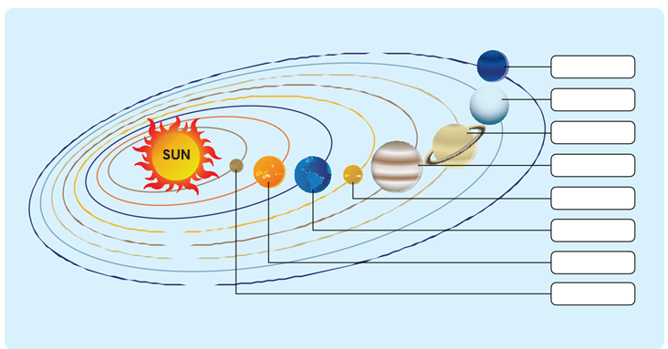